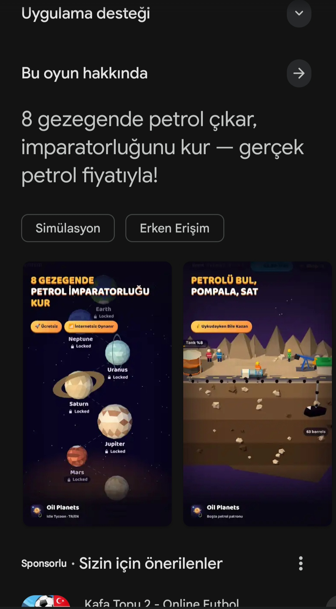
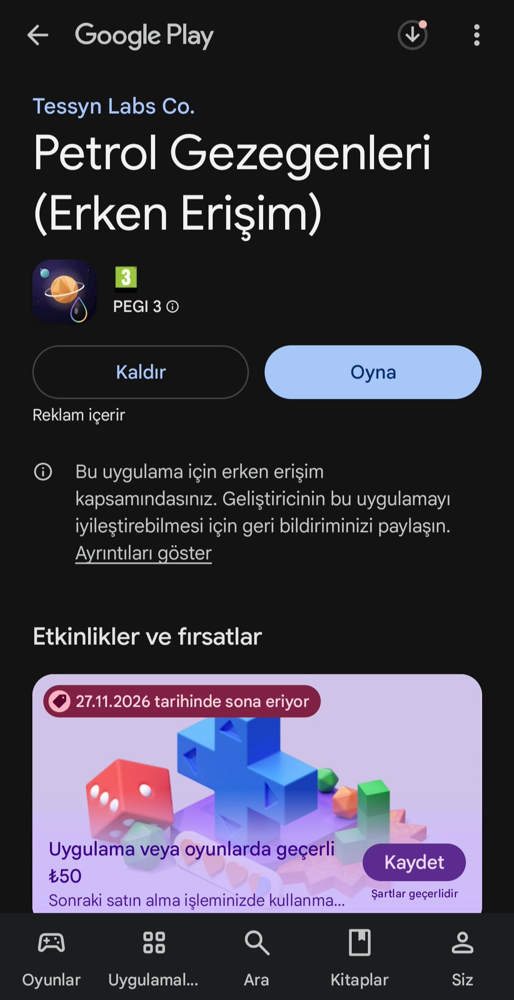
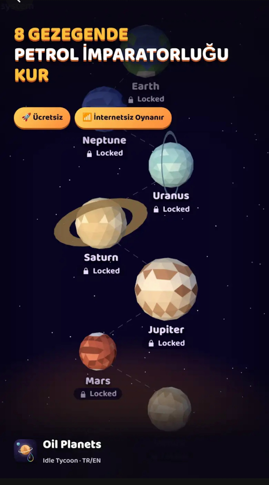
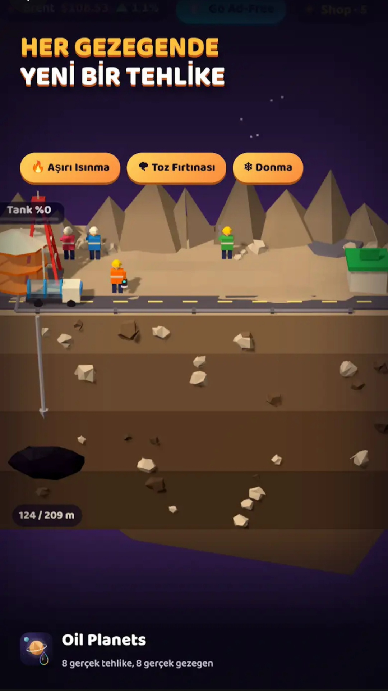
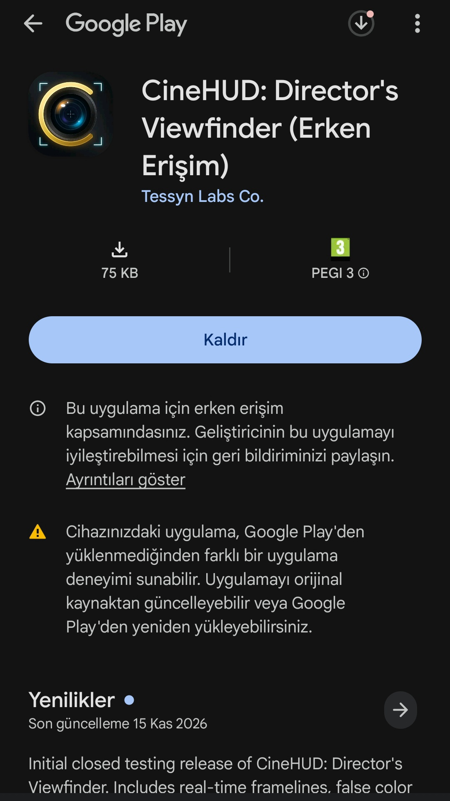
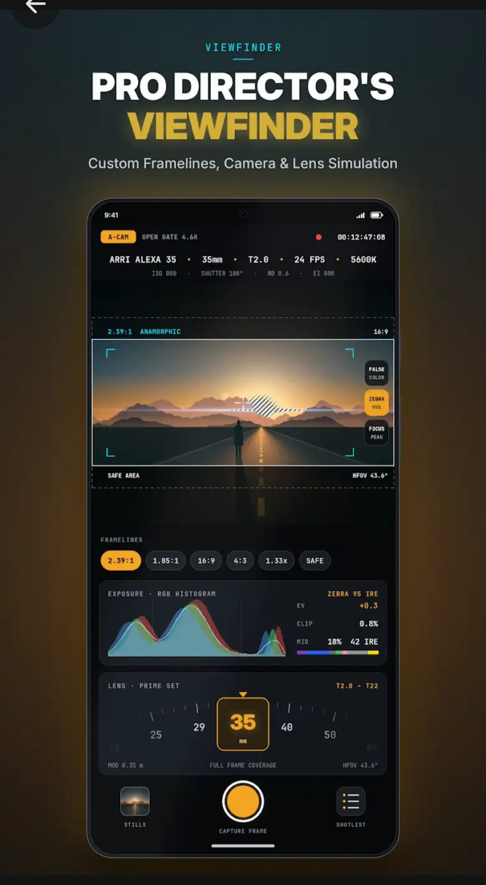
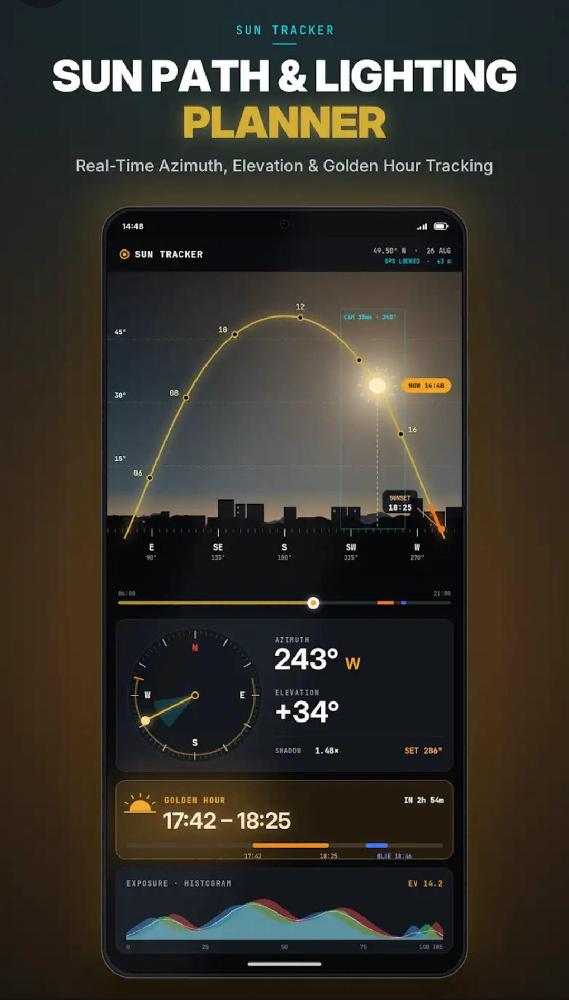
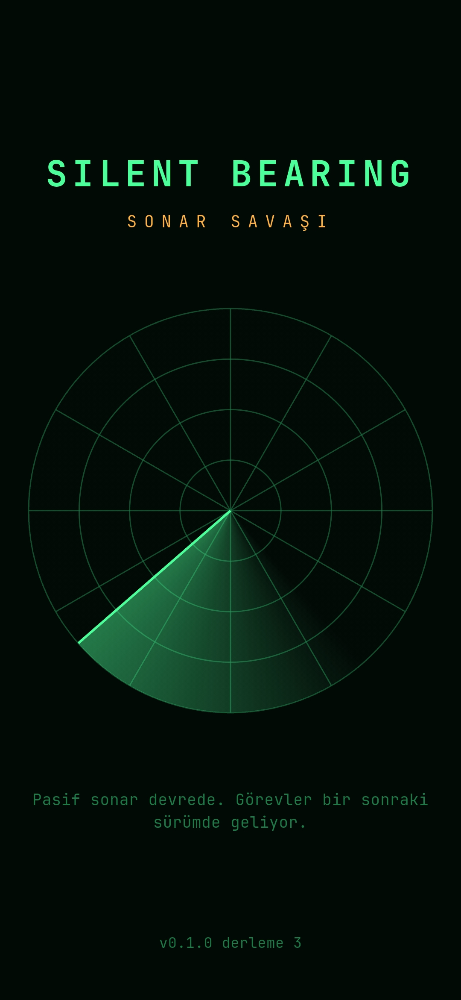
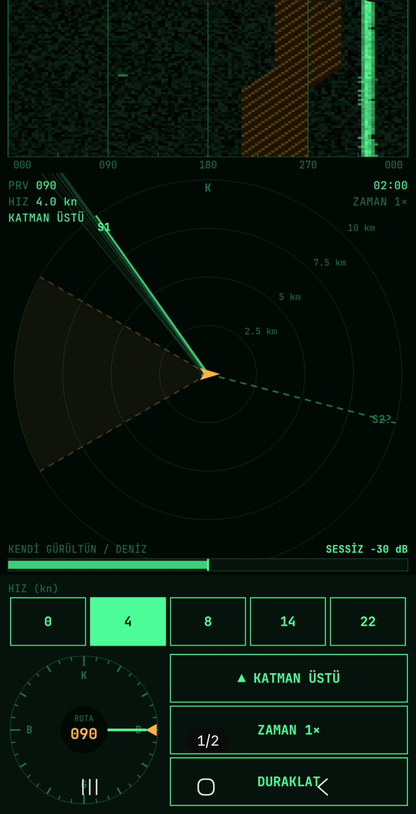

Soner Acar — Fikirden Mağazaya Mobil Ürün & Oyun Geliştiricisi
Tessyn Labs Co. çatısı altında modern AI iş akışları ve bulut otomasyonuyla günler içinde çalışan Android uygulamaları ve oyunları geliştiriyor; Google Play Console 14 günlük kapalı test süreçlerini anahtar teslim yönetiyorum.
Geliştirilen Uygulamalar & Oyunlar
Ekran görüntülerinin üzerine dokunarak tam boyutta inceleyebilirsiniz.
Petrol Gezegenleri (Oil Planets)
8 farklı gezegende keşif, sondaj ve gerçek petrol fiyatlarına endeksli dinamik ticaret mekanikleri sunan simülasyon oyunu. Çevrimdışı kazanç ve AdMob gelir modeliyle Google Play erken erişim sürecinde.




CineHUD — Director's Viewfinder
Görüntü yönetmenleri ve set ekipleri için geliştirilen; canlı kamera vizörü, False Color / Zebra pozlama analizi, güneş açısı takibi, 2D ışık yerleşim planı ve PDF shotlist çıktısı üreten profesyonel prodüksiyon uygulaması.



Marine Anchor Watch
Demirleyen tekneler için gerçek zamanlı GPS Haversine mesafe hesaplaması yapan, tarama (sürüklenme) durumunda sesli alarm üreten ve gece görüşünü koruyan kırmızı ekran moduna sahip güvenlik aracı.

Passive Sonar — Tactical Submarine
Şelale (waterfall) akustik sonar analizi, termal katman derinliği yönetimi, desibel gürültü kontrolü ve gerçek zamanlı hedef vektör takibi sunan denizaltı taktik simülasyonu.


Nasıl Yardımcı Olabilirim?
Bireysel geliştiriciler ve girişimler için hızlı, net ve sonuç odaklı çözümler.
1. Google Play 12 Tester & Yayınlama
Yeni geliştirici hesapları için zorunlu olan 12+ gerçek test kullanıcısı ve 14 gün kesintisiz test sürecini yönetiyor, politika formlarını tamamlayıp uygulamanızı yayına hazırlıyorum.
2. Web Projesinden İmzalı Android (AAB)
Hazır web uygulamanızı veya yapay zeka ile oluşturduğunuz projeyi Android'e dönüştürüyor, Keystore ile imzalıyor ve GitHub Actions otomatik derleme hattını kuruyorum.
3. Fikirden Çalışan Android MVP
Girişiminiz veya oyun fikriniz için aylarca beklemeden, günler içinde telefonda çalışan ve sunuma hazır ilk sürümü (MVP) ortaya çıkarıyorum.